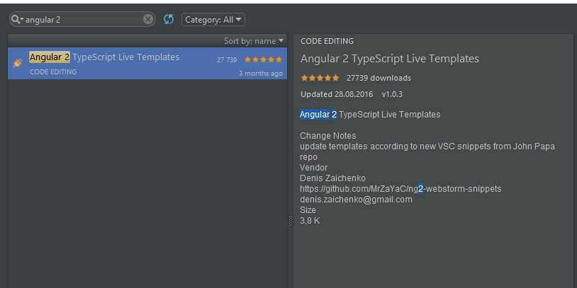
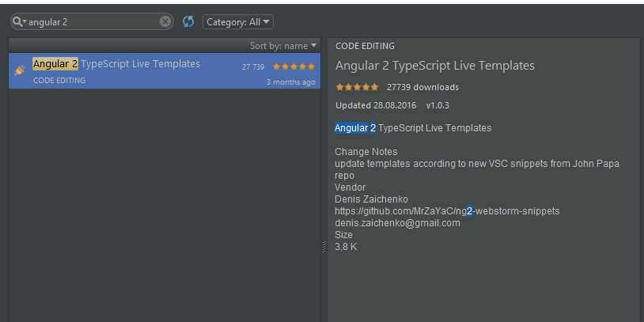

History

Ready,
steady,

import { Component } from '@angular/core';@Component({selector: 'my-app',template: "<h1>{{title}}</h1>"})export class AppComponent {public title:string = 'My awesome Angular 2 component';}
import { Directive, ElementRef } from '@angular/core';@Directive({ selector: '[myHighlight]' })export class HighlightDirective {constructor(el: ElementRef) {el.nativeElement.style.backgroundColor = 'yellow';}}
import { Injectable } from '@angular/core';@Injectable()export class awesomeService {doSmth(){//do something}}
import { Pipe, PipeTransform } from '@angular/core';@Pipe({name: 'exponential'})export class ExponentialPipe implements PipeTransform {transform(value: number, exponent: string): number {let exp = parseFloat(exponent);return Math.pow(value, isNaN(exp) ? 1 : exp);}}
One-way Data Binding
<p>{{user.name}}</p> - interpolation<img [src]="user.photo"/> - bind property from class<button (click)="submit()"></button> - bind event to class
Two-way Data Binding
<input type="text" [(ngModel)]="user.occupation"/>
- data binding between view and class
 

npm install -g angular-cling new %projectName%ng generate %entity% %entityName%ng buildng testng serveng ...